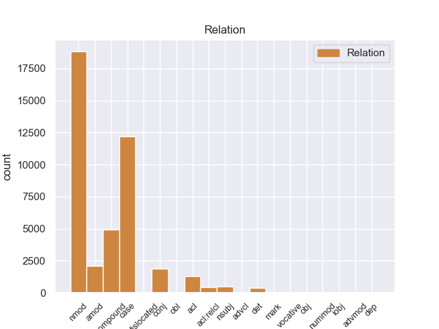
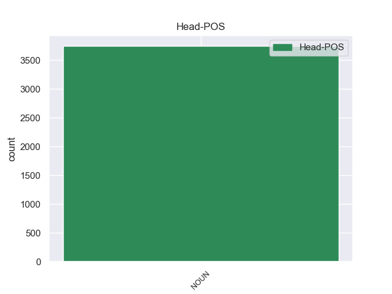
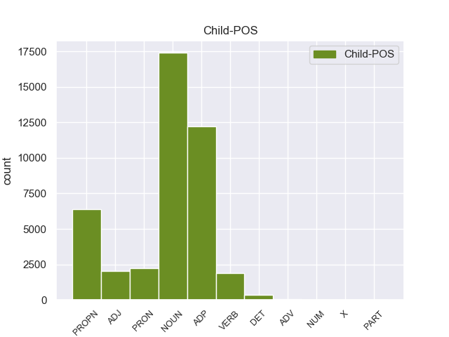

Distribution of features within this leaf



Agreement Rules sorted by frequency.
- When the dependent token is the adjectival modifier(amod) of the head token, and the head token is NOUN and the dependent token is ADJ.
1 उन्होंने _ _ _ _ 0 _ _ _
2 यहां _ _ _ _ 0 _ _ _
3 वेटिकन _ _ _ _ 0 _ _ _
4 दूतावास _ _ _ _ 0 _ _ _
5 में _ _ _ _ 0 _ _ _
6 एक _ _ _ _ 0 _ _ _
7 शोक _ _ _ _ 0 _ _ _
8 पुस्तिका _ _ _ _ 0 _ _ _
9 पर _ _ _ _ 0 _ _ _
10 हस्ताक्षर _ _ _ _ 0 _ _ _
11 कर _ _ _ _ 0 _ _ _
12 पोप _ _ _ _ 0 _ _ _
13 जॉन _ _ _ _ 0 _ _ _
14 पॉल _ _ _ _ 0 _ _ _
15 द्वितीय _ _ _ _ 0 _ _ _
16 के _ _ _ _ 0 _ _ _
17 निधन _ _ _ _ 0 _ _ _
18 पर _ _ _ _ 0 _ _ _
19 गहरा गहरा ADJ JJ Case=Nom|Gender=Masc|Number=Sing 20 amod _ ChunkId=NP8|ChunkType=child|Translit=gaharā
20 दुख दुख NOUN NN Case=Nom|Gender=Masc|Number=Sing|Person=3 0 _ _ _
21 प्रकट _ _ _ _ 0 _ _ _
22 किया _ _ _ _ 0 _ _ _
23 । _ _ _ _ 0 _ _ _
1 वैसे _ _ _ _ 0 _ _ _
2 तुषार _ _ _ _ 0 _ _ _
3 गांधी _ _ _ _ 0 _ _ _
4 को _ _ _ _ 0 _ _ _
5 भी _ _ _ _ 0 _ _ _
6 शुरू _ _ _ _ 0 _ _ _
7 में _ _ _ _ 0 _ _ _
8 इसका _ _ _ _ 0 _ _ _
9 अंदाजा अंदाजा NOUN NN Case=Nom|Gender=Masc|Number=Sing|Person=3 0 _ _ _
10 नहीं _ _ _ _ 0 _ _ _
11 होगा _ _ _ _ 0 _ _ _
12 कि _ _ _ _ 0 _ _ _
13 इस _ _ _ _ 0 _ _ _
14 मार्च _ _ _ _ 0 _ _ _
15 से _ _ _ _ 0 _ _ _
16 कांग्रेसियों _ _ _ _ 0 _ _ _
17 को _ _ _ _ 0 _ _ _
18 राजनीतिक _ _ _ _ 0 _ _ _
19 फायदा _ _ _ _ 0 _ _ _
20 मिलेगा मिल VERB VM Gender=Masc|Mood=Ind|Number=Sing|Person=3|Tense=Fut|VerbForm=Fin|Voice=Act 9 acl _ ChunkId=VGF2|ChunkType=head|Stype=declarative|Tam=gA|Translit=milegā|Vib=गा
21 । _ _ _ _ 0 _ _ _
1 वोल्कर _ _ _ _ 0 _ _ _
2 ने _ _ _ _ 0 _ _ _
3 कहा _ _ _ _ 0 _ _ _
4 कि _ _ _ _ 0 _ _ _
5 जांच _ _ _ _ 0 _ _ _
6 के _ _ _ _ 0 _ _ _
7 दौरान _ _ _ _ 0 _ _ _
8 किसी _ _ _ _ 0 _ _ _
9 ने _ _ _ _ 0 _ _ _
10 उन्हें _ _ _ _ 0 _ _ _
11 बताया _ _ _ _ 0 _ _ _
12 भी _ _ _ _ 0 _ _ _
13 नहीं _ _ _ _ 0 _ _ _
14 कि _ _ _ _ 0 _ _ _
15 निविदा _ _ _ _ 0 _ _ _
16 की _ _ _ _ 0 _ _ _
17 सारी सारा DET QF Case=Acc|Gender=Fem|Number=Sing 18 det _ ChunkId=NP6|ChunkType=child|Translit=sārī
18 प्रक्रिया प्रक्रिया NOUN NN Case=Acc|Gender=Fem|Number=Sing|Person=3 0 _ _ _
19 पर _ _ _ _ 0 _ _ _
20 किसी _ _ _ _ 0 _ _ _
21 ने _ _ _ _ 0 _ _ _
22 प्रभाव _ _ _ _ 0 _ _ _
23 डालने _ _ _ _ 0 _ _ _
24 की _ _ _ _ 0 _ _ _
25 कोशिश _ _ _ _ 0 _ _ _
26 की _ _ _ _ 0 _ _ _
27 या _ _ _ _ 0 _ _ _
28 इस _ _ _ _ 0 _ _ _
29 पर _ _ _ _ 0 _ _ _
30 विचार _ _ _ _ 0 _ _ _
31 भी _ _ _ _ 0 _ _ _
32 किया _ _ _ _ 0 _ _ _
33 गया _ _ _ _ 0 _ _ _
34 । _ _ _ _ 0 _ _ _
1 पाठ्यक्रम _ _ _ _ 0 _ _ _
2 में _ _ _ _ 0 _ _ _
3 बदलाव _ _ _ _ 0 _ _ _
4 के _ _ _ _ 0 _ _ _
5 बहाने _ _ _ _ 0 _ _ _
6 हुए हो VERB VM Aspect=Perf|Gender=Masc|Number=Sing|VerbForm=Part 8 amod _ ChunkId=VGNF|ChunkType=head|Tam=yA|Translit=hue|Vib=या
7 कथित _ _ _ _ 0 _ _ _
8 भगवाकरण भगवाकरण NOUN NN Case=Acc|Gender=Masc|Number=Sing|Person=3 0 _ _ _
9 को _ _ _ _ 0 _ _ _
10 दूर _ _ _ _ 0 _ _ _
11 करने _ _ _ _ 0 _ _ _
12 के _ _ _ _ 0 _ _ _
13 बारे _ _ _ _ 0 _ _ _
14 में _ _ _ _ 0 _ _ _
15 वह _ _ _ _ 0 _ _ _
16 अगले _ _ _ _ 0 _ _ _
17 आठ _ _ _ _ 0 _ _ _
18 - _ _ _ _ 0 _ _ _
19 दस _ _ _ _ 0 _ _ _
20 दिनों _ _ _ _ 0 _ _ _
21 में _ _ _ _ 0 _ _ _
22 ही _ _ _ _ 0 _ _ _
23 कोई _ _ _ _ 0 _ _ _
24 निर्णय _ _ _ _ 0 _ _ _
25 ले _ _ _ _ 0 _ _ _
26 लेंगे _ _ _ _ 0 _ _ _
27 । _ _ _ _ 0 _ _ _
1 गांव _ _ _ _ 0 _ _ _
2 के _ _ _ _ 0 _ _ _
3 लोगों _ _ _ _ 0 _ _ _
4 को _ _ _ _ 0 _ _ _
5 इस _ _ _ _ 0 _ _ _
6 घटना _ _ _ _ 0 _ _ _
7 का _ _ _ _ 0 _ _ _
8 तब _ _ _ _ 0 _ _ _
9 पता _ _ _ _ 0 _ _ _
10 चला _ _ _ _ 0 _ _ _
11 जब _ _ _ _ 0 _ _ _
12 सामने सामने ADV NST AdpType=Post|Case=Acc|Gender=Masc|Number=Sing|Person=3 14 amod _ AltTag=ADV-NOUN|ChunkId=NP7|ChunkType=head|Translit=sāmane|Vib=0_का
13 के _ _ _ _ 0 _ _ _
14 मकान मकान NOUN NN Case=Acc|Gender=Masc|Number=Sing|Person=3 0 _ _ _
15 की _ _ _ _ 0 _ _ _
16 छत _ _ _ _ 0 _ _ _
17 पर _ _ _ _ 0 _ _ _
18 सो _ _ _ _ 0 _ _ _
19 रही _ _ _ _ 0 _ _ _
20 महिला _ _ _ _ 0 _ _ _
21 ने _ _ _ _ 0 _ _ _
22 आग _ _ _ _ 0 _ _ _
23 की _ _ _ _ 0 _ _ _
24 लपटें _ _ _ _ 0 _ _ _
25 देखकर _ _ _ _ 0 _ _ _
26 चिल्लाना _ _ _ _ 0 _ _ _
27 शुरू _ _ _ _ 0 _ _ _
28 किया _ _ _ _ 0 _ _ _
29 । _ _ _ _ 0 _ _ _
Disagree Examples:
1 इस _ _ _ _ 0 _ _ _
2 थीम _ _ _ _ 0 _ _ _
3 पार्क _ _ _ _ 0 _ _ _
4 की _ _ _ _ 0 _ _ _
5 सबसे _ _ _ _ 0 _ _ _
6 मजेदार _ _ _ _ 0 _ _ _
7 बात बात NOUN NN Case=Nom|Gender=Fem|Number=Sing|Person=3 0 _ _ _
8 है _ _ _ _ 0 _ _ _
9 कि _ _ _ _ 0 _ _ _
10 यहाँ _ _ _ _ 0 _ _ _
11 आप _ _ _ _ 0 _ _ _
12 स्क्रीन _ _ _ _ 0 _ _ _
13 के _ _ _ _ 0 _ _ _
14 अंदर _ _ _ _ 0 _ _ _
15 जाकर _ _ _ _ 0 _ _ _
16 रियल _ _ _ _ 0 _ _ _
17 लाइफ _ _ _ _ 0 _ _ _
18 में _ _ _ _ 0 _ _ _
19 एक्शन _ _ _ _ 0 _ _ _
20 का _ _ _ _ 0 _ _ _
21 लुत्फ _ _ _ _ 0 _ _ _
22 ले ले VERB VM Gender=Masc|Number=Sing|Person=2|Polite=Form|Voice=Act 7 acl _ ChunkId=VGF2|ChunkType=head|Stype=declarative|Tam=0|Translit=le|Vib=0_सक+ता_है
23 सकते _ _ _ _ 0 _ _ _
24 हैं _ _ _ _ 0 _ _ _
25 । _ _ _ _ 0 _ _ _
1 यही यह DET DEM Case=Nom|Gender=Masc|Number=Sing|Person=3|PronType=Dem 2 det _ ChunkId=NP|ChunkType=child|Translit=yahī
2 वजह वजह NOUN NN Case=Nom|Gender=Fem|Number=Sing|Person=3 0 _ _ _
3 है _ _ _ _ 0 _ _ _
4 कि _ _ _ _ 0 _ _ _
5 जैसलमेर _ _ _ _ 0 _ _ _
6 को _ _ _ _ 0 _ _ _
7 गोल्डन _ _ _ _ 0 _ _ _
8 सिटी _ _ _ _ 0 _ _ _
9 के _ _ _ _ 0 _ _ _
10 नाम _ _ _ _ 0 _ _ _
11 से _ _ _ _ 0 _ _ _
12 भी _ _ _ _ 0 _ _ _
13 जाना _ _ _ _ 0 _ _ _
14 जाता _ _ _ _ 0 _ _ _
15 है _ _ _ _ 0 _ _ _
16 . _ _ _ _ 0 _ _ _
1 यही _ _ _ _ 0 _ _ _
2 वजह वजह NOUN NN Case=Nom|Gender=Fem|Number=Sing|Person=3 0 _ _ _
3 है _ _ _ _ 0 _ _ _
4 कि _ _ _ _ 0 _ _ _
5 जैसलमेर _ _ _ _ 0 _ _ _
6 को _ _ _ _ 0 _ _ _
7 गोल्डन _ _ _ _ 0 _ _ _
8 सिटी _ _ _ _ 0 _ _ _
9 के _ _ _ _ 0 _ _ _
10 नाम _ _ _ _ 0 _ _ _
11 से _ _ _ _ 0 _ _ _
12 भी _ _ _ _ 0 _ _ _
13 जाना जान VERB VM Aspect=Perf|Gender=Masc|Number=Sing|Person=3|VerbForm=Part|Voice=Act 2 acl _ ChunkId=VGF2|ChunkType=head|Stype=declarative|Tam=yA|Translit=jānā|Vib=या_जा+ता_है
14 जाता _ _ _ _ 0 _ _ _
15 है _ _ _ _ 0 _ _ _
16 . _ _ _ _ 0 _ _ _
1 यही _ _ _ _ 0 _ _ _
2 वजह वजह NOUN NN Case=Nom|Gender=Fem|Number=Sing|Person=3 0 _ _ _
3 है _ _ _ _ 0 _ _ _
4 कि _ _ _ _ 0 _ _ _
5 उन्होंने _ _ _ _ 0 _ _ _
6 दिल्ली _ _ _ _ 0 _ _ _
7 से _ _ _ _ 0 _ _ _
8 पहले _ _ _ _ 0 _ _ _
9 आगरा _ _ _ _ 0 _ _ _
10 को _ _ _ _ 0 _ _ _
11 अपनी _ _ _ _ 0 _ _ _
12 राजधानी _ _ _ _ 0 _ _ _
13 बनाया बना VERB VM Aspect=Perf|Gender=Masc|Number=Sing|VerbForm=Part|Voice=Act 2 acl _ ChunkId=VGF2|ChunkType=head|Stype=declarative|Tam=yA|Translit=banāyā|Vib=या_था
14 था _ _ _ _ 0 _ _ _
15 . _ _ _ _ 0 _ _ _
1 इस _ _ _ _ 0 _ _ _
2 शर्त _ _ _ _ 0 _ _ _
3 को _ _ _ _ 0 _ _ _
4 पूरी _ _ _ _ 0 _ _ _
5 करने _ _ _ _ 0 _ _ _
6 के _ _ _ _ 0 _ _ _
7 लिए _ _ _ _ 0 _ _ _
8 महाराणा _ _ _ _ 0 _ _ _
9 रतन _ _ _ _ 0 _ _ _
10 सिंह _ _ _ _ 0 _ _ _
11 ने _ _ _ _ 0 _ _ _
12 पद्मिनी _ _ _ _ 0 _ _ _
13 की _ _ _ _ 0 _ _ _
14 छवि _ _ _ _ 0 _ _ _
15 कुछ _ _ _ _ 0 _ _ _
16 इस _ _ _ _ 0 _ _ _
17 तरह तरह NOUN NN Case=Nom|Gender=Fem|Number=Sing|Person=3 0 _ _ _
18 अलाउद्दीन _ _ _ _ 0 _ _ _
19 को _ _ _ _ 0 _ _ _
20 दिखाई _ _ _ _ 0 _ _ _
21 कि _ _ _ _ 0 _ _ _
22 राजपूताना _ _ _ _ 0 _ _ _
23 मर्यादा _ _ _ _ 0 _ _ _
24 का _ _ _ _ 0 _ _ _
25 हनन _ _ _ _ 0 _ _ _
26 भी _ _ _ _ 0 _ _ _
27 नहीं _ _ _ _ 0 _ _ _
28 हुआ हो VERB VM Aspect=Perf|Gender=Masc|Number=Sing|VerbForm=Part|Voice=Act 17 acl _ ChunkId=VGF2|ChunkType=head|Stype=declarative|Tam=yA|Translit=huā|Vib=या
29 और _ _ _ _ 0 _ _ _
30 अलाउद्दीन _ _ _ _ 0 _ _ _
31 की _ _ _ _ 0 _ _ _
32 शर्त _ _ _ _ 0 _ _ _
33 भी _ _ _ _ 0 _ _ _
34 पूरी _ _ _ _ 0 _ _ _
35 हो _ _ _ _ 0 _ _ _
36 गई _ _ _ _ 0 _ _ _
37 । _ _ _ _ 0 _ _ _